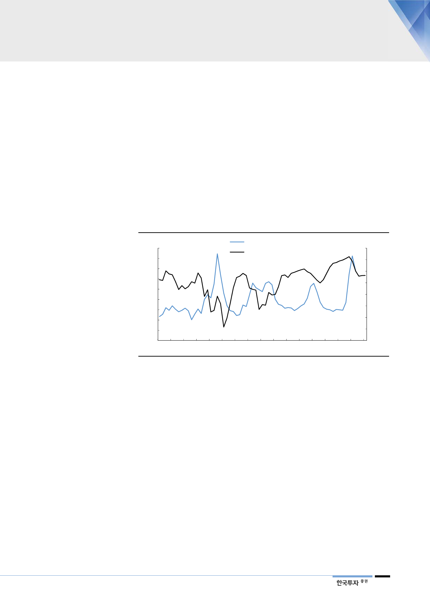

1Q19 재고증가 우려만큼
높지 않았다
수요는 4Q18 매크로 충격
이후 회복 중
II. 디램 - 재고 고점 통과
재고가 고점을 지나고 있다
지난 2018년말 삼성전자 반도체부문과 SK하이닉스의 재고금액은 전분기대비 각
각 22%, 20% 증가했다. 메모리가격이 하락을 본격화했음에도 생산물량에 비해
출하가 부족해지면서 재고물량이 크게 증가했기 때문이다. 1분기에도 매출액 대
비 재고 비중은 더 높아지겠지만 2분기부터는 하락 반전할 수 있을 것이다. 역사
적으로 매출액 대비 재고비중과 메모리가격 또는 메모리사업의 수익성과는 일정
시차를 두고 역의 상관관계가 있음을 확인할 수 있다. 매출액 대비 재고비중이 하
락하기 시작하는 2분기부터 주가의 본격적인 상승이 나타날 것이다.
[그림 7] SK하이닉스 매출액 대비 재고 비중 vs. 디램 영업이익률 추이 및 전망
(%)
90
80
70
60
50
40
30
20
10
SK하이닉스 매출액 대비 재고비중(좌)
SK하이닉스 DRAM 영업이익률(우)
(원)
80
60
40
20
0
(20)
(40)
(60)
0
(80)
1Q04 3Q05 1Q07 3Q08 1Q10 3Q11 1Q13 3Q14 1Q16 3Q17 1Q19F
자료: SK하이닉스, 한국투자증권
지난 4분기 전세계 디램수요는 전년대비 5% 증가했고 전분기대비 11% 감소했
다. 지난 2015년 4분기 하락사이클에서 디램수요가 전분기대비 2% 감소한 후 3
년 만에 4분기 디램수요가 전분기대비 감소했다. 감소폭으로는 데이터가 제공되
는 기간 중 가장 크고 디램수요 증가율이 낮아지고 있다는 점을 고려해도 감소폭
이 크다. 이유는 미중 무역분쟁 등으로 인한 매크로 우려의 영향이 가장 크다. 과
거에도 이러한 매크로 충격은 확인할 수 있는데 2008년 4분기 금융위기, 2012
년 3분기 유럽재정위기 고조 등으로 일시적으로 디램수요가 크게 위축됐던 경험
이 있다. 하지만, 일시적으로 위축됐던 수요는 이후 정상적인 수준으로 회복되면
서 수급도 개선됐다.
5